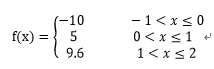

编写一个程序，对任给的正整数N (N≤100)，寻找所有的四元组(a, b, c, d)，使得a^3= b^3 + c^3 + d^3，其中a,b,c,d 大于 1, 小于等于N。
输入一个正整数N (N≤100)，输出 每行输出一个完美立方。输出格式为： Cube = a, Triple = (b,c,d) 其中a,b,c,d所在位置分别用实际求出四元组值代入。
请按照a的值，从小到大依次输出。当两个完美立方 等式中a的值相同，则b值小的优先输出，仍相同则c值小的优先输出，再相同则d值小的先输出。
n = int(input())
cube = [0]
for i in range(2, n+1):
cube.append(i**3)
for a in range(3,n):
for b in range(0,a-2):
if cube[a] < (cube[b] + cube[b+1] + cube[b+2]):
break
for c in range(b+1,a-1):
if cube[a] < (cube[b] + cube[c] + cube[c+1]):
break
for d in range(c+1,a):
if cube[a] == (cube[b] + cube[c] + cube[d]):
print("Cube = %d,Tripe = (%d,%d,%d)" %(a+1,b+1,c+1,d+1))汇率为：1美元=6.78人民币。
输入格式为：USD10，输出格式为：RMB67.8（注意中间没有是空格的）。
str1=input()
import re
num=int(''.join(re.findall('\d+',str1)))
if 'RMB' in str1:
print('USD','%.2f' %(num/6.78),sep='')
elif 'USD' in str1:
print('RMB','%.2f' %(num*6.78),sep='')输入一串字母，将它们都加3，如果超过122（z的ASCII值）就减掉26。
比如 ‘xyz’ 会变成 ‘abc’ 。
original=input()
cipher=''
for i in original:
a=ord(i)
if 97<=a<=119:
cipher+=chr(a+3)
elif 120<=a<=122:
cipher+=chr(a+3-26)
else:
cipher+=i
print(cipher) 一年365天，以第1天的能力值为基数，记为1.0。当好好学习时，能力值相比前一天提高N‰；当没有学习时，由于遗忘等原因能力值相比前一天下降N‰。每天努力或放任，一年下来的能力值相差多少呢？其中，N的取值范围是1到10，N可以是小数。
获得用户输入N，计算每天努力和每天放任365天后的能力值及能力间比值，其中，能力值保留小数点后2位，能力间比值输出整数，输出结果间采用英文逗号分隔。
代码如下：
1 percent=eval(input())
2 hard=sunning=1
3 for i in range(2,366):
4 hard*=(1+percent/1000)
5 sunning*=(1-percent/1000)
6 print('%.2f,%.2f,%d' %(hard,sunning,hard/sunning))编写一个算法来确定一个数字是否“快乐”。 快乐的数字按照如下方式确定：从一个正整数开始，用其每位数的平方之和取代该数，并重复这个过程，直到最后数字要么收敛等于1且一直等于1，要么将无休止地循环下去且最终不会收敛等于1。能够最终收敛等于1的数就是快乐的数字。
例如: 19 就是一个快乐的数字，计算过程如下：
当输入时快乐的数字时，输出True，否则输出False。
代码如下：
1 num=eval(input())
2 list1=[]
3 while (num not in list1) and (num!=1):
4 list1.append(num)
5 a=num%10
6 b=num//10%10
7 c=num//100
8 num=a**2+b**2+c**2 9 if num==1:
10 print('True')
11 else:
12 print('False')一只青蛙一次可以跳上1级台阶，也可以跳上2级。请问该青蛙跳上一个n级的台阶总共有多少种跳法。
输入台阶数，输出一共有多少种跳法。
注意：如果运算超时，请思考有什么办法降低时间复杂度。
代码如下：（递归，可能会超出时间上限）
1 def wawa(step):
2 if step==1:
3 way=1
4 elif step==2:
5 way=2
6 else:
7 way=wawa(step-1)+wawa(step-2)
8 return way
9
10 step=eval(input())
11 print(wawa(step))(循环，思路简单而且高速）
1 def wawa(step):
2 if step==1 or step==2:
3 return step
4 a=1
5 b=2
6 c=0
7 for i in range(3,step+1):
8 c=a+b
9 a=b
10 b=c
11 return c
12
13 step=eval(input())
14 print(wawa(step))编写一个学生成绩转换程序，用户输入百分制的学生成绩，成绩大于或等于90且小于或等于100的输出为“A”，成绩大于或等于80且小于90的输出为“B”，成绩大于或等于70且小于80的输出为“C”，成绩大于或等于60且小于70的输出为“D”，成绩小于60的输出为“E”。输入数据不合法时输出“data error!”用户可反复输入成绩进行转换，输入负数时输出“end”并结束程序。
代码如下：
1 flag=1
2 while flag:
3 grade=input()
4 try:
5 grade=eval(grade)
6 if 100>=grade>=90:
7 print('A')
8 elif 90>grade>=80:
9 print('B')
10 elif 80>grade>=70:
11 print('C')
12 elif 70>grade>=60:
13 print('D')
14 elif 60>grade>=0:
15 print('E')
16 elif grade<0:
17 print('end')
18 flag=0
19 else:
20 print('data error!')
21 except:
22 print('data error!')质数(Prime Number)又称素数。一个大于1的自然数，除了1和它自身外，不能被其他自然数整除的数叫做质数；否则称为合数。
本题要求实现一个函数，判断参数是否是质数，是的话返回True，否则返回False。
代码如下：
1 def isPrime(num):
2 import math
3 for i in range(2,int(math.sqrt(num))+1):
4 if num%i==0:
5 return 0
6 return 1
7
8 num=int(input())
9 if isPrime(num):
10 print('yes')
11 else:
12 print('no')编写一个程序，用户输入一个月份的数字，输出月份的缩写。
代码如下：
1 months={1: 'Jan.',2:'Feb.',3:'Mar.',4:'Apr.',5:'May.',6:'Jun.',7:'Jul.',8:'Aug.',9:'Sep.',10:'Oct.',11:'Nov.',12:'Dec.'}
2 str1=int(input())
3 print(months[str1])
输入x，按上述分段函数求解。如果输入超出范围的x则输出“ERROR” 。
代码如下：
1 x=eval(input())
2 if -1<x<=0:
3 print('f(x)=-10')
4 elif 0<x<=1:
5 print('f(x)=5')
6 elif 1<x<=2:
7 print('f(x)=9.6')
8 else:
9 print('ERROR')闰年366天，其他年份365天。普通年（不能被100整除的年份）能被4整除的为闰年。（如2004年就是闰年,1999年不是闰年）；
世纪年（能被100整除的年份）能被400整除的是闰年。(如2000年是闰年，1900年不是闰年)；
用户输入一个正整数，代表年份，输出该年有多少天？
代码如下：
'''
遇到问题没人解答？小编创建了一个Python学习交流QQ群：857662006
寻找有志同道合的小伙伴，互帮互助,群里还有不错的视频学习教程和PDF电子书！
'''
1 year=int(input())
2 if year%100==0:#世纪年
3 if year%400==0:
4 print('366')
5 else:
6 print('365')
7 else:
8 if year%4==0:
9 print('366')
10 else:
11 print('365') 用户登录网站经常需要输入验证码，验证码包含大小写字母和数字，随机出现。用户输入验证码时不区分大小写，只要各字符出现顺序正确即可通过验证。
请写一个程序完成验证码的匹配验证，假设当前显示的验证码是'Qs2X'。
如果用户输入验证码正确，输出“验证码正确”，输入错误时输出“验证码错误，请重新输入”。
代码如下：
1 str1='Qs2X'
2 str2=input()
3 if str1.lower()==str2.lower():
4 print('验证码正确')
5 else:
6 print('验证码错误，请重新输入')求1+3+5+……+（2n-1）前n项和。
代码如下：（这个真的是简单到不想发上来、、、、、）
1 i=int(input())
2 s=0
3 for i in range(1,i*2,2):
4 s=s+i
5 print(s)